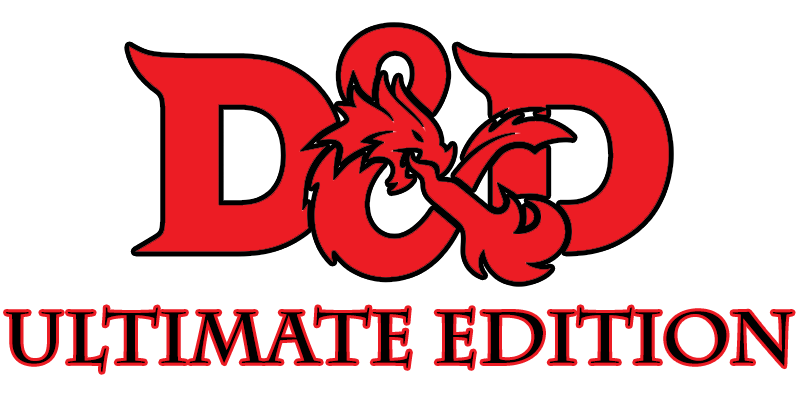

Like us, you're probably a huge fan of 5th Edtion Dungeons & Dragons™! Famously known as "the world's greatest role-playing game" by the multi-billion dollar corporation that owns it, 5E's three-hundred page Player's Handbook plus supplementary material is as simple and easy to learn as it gets. Tabletop gamers far and wide know that all things can, and should, be converted to 5E. However, there's still a few minor kinks to work out in the game that make it fall ever so slightly short of perfection. That's why we've created D&D 5E: Ultimate Edition: a simple set of rules to enhance your already fantastic 5th Edtion Dungeons & Dragons™ experience.
- In fifth edition, players are allowed to make their own backgrounds, making the backgrounds system little more than a way to take up space in the books. We've removed backgrounds from the game, but those who still feel that backgrounds have merit may wish to scavenge another similar system from a different game for use in D&D 5E: Ultimate Edition.
- "Hit points" are unrealistic- a character on the brink of death is still possessed of their full abilities. To avoid breaking suspension of disbelief, use another hit points system, potentially from a different game entirely.
- Due to their mechanical nature making little sense within the context of the game, experience points and leveling up are no longer part of D&D 5E: Ultimate Edition. Your DM may choose to replace them with mechanics from a different game.
- To encourage flexibility in character design, class has been removed from the game. DMs are encouraged to replace it with similar functions from a game of their choosing.
- We believe stats are a reductive way to define a character. D&D 5E: Ultimate Edition introduces a drastic overhaul to the 6-stats system. However, it is still in progress, so until then simply use a different game's stats.
- "Race" plays heavily into racist tropes and has no place in modern tabletop gaming. Replace it with a different system that might also possibly be called "race".
- Skills are gone. We believe in flexibility above all, and nothing offers greater flexibility than the ability to replace the skill system with the skill system of a different game.
- D&D 5E: Ultimate Edition leaves combat rules largely unchanged from the 5th Edition combat you know and love, with one small exception: we've thrown out everything relating to combat. Ask your DM what the replacement rules are.
- 5th Edition's extensive catalogue of items has been drastically simplified. There is now only one item, known as "ITEM". We understand some players may not find this to their liking and encourage them to use items from a another game, instead.
- D&D 5E: Ultimate Edition replaces the default settings with a blank canvas; a whole new world to be filled with whatever fantastical things your mind can conjure. The sky's the limit in D&D 5E: Ultimate Edition!
And that's it! Now that you know the rules, get out there and enjoy the new and improved version of D&D 5E: the world's greatest role-playing game™!